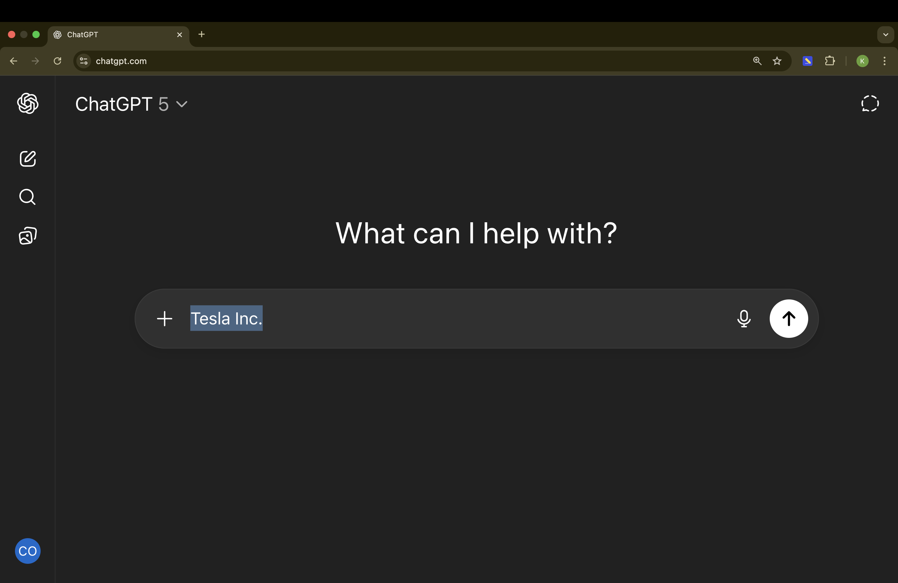
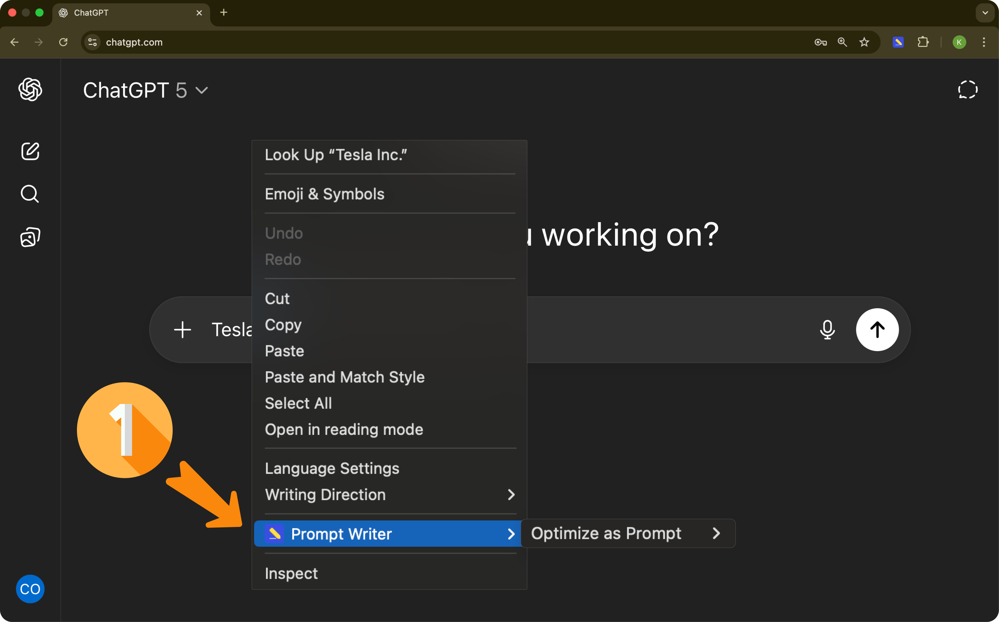
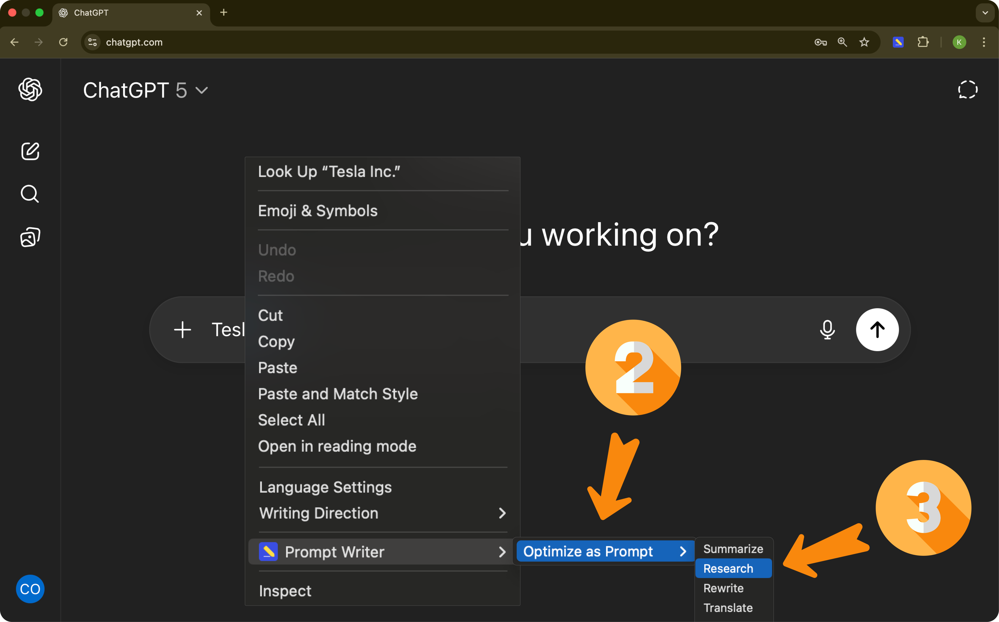

Prompt Writer is installed
To get started:
- Open your chatbot or any webpage.
- Type any text and select it. 
- Right-click the selection → "Prompt Writer". 
- Click "Optimize as Prompt", then choose a mode to continue. 
Try it out with your favorite chatbot